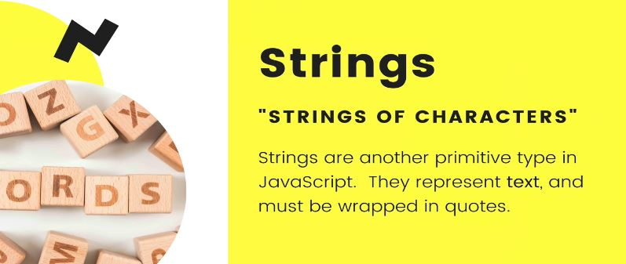
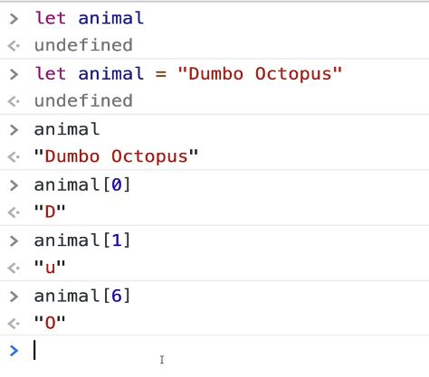

Section 15: JavaScript Strings and More

Accessing characters in a string
adding numbers and strings js coerces them into a string type

length is a property doesn't need (). methods need the ().

trim() is useful when accepting user input. removes only whitespace on left and right of a str.

chaining str methods

some methods take arguements
does a str contain something?
The indexOf() method returns the index within the calling String object of the first occurrence of the specified value. if it doesn't find a character in a string it returns -1.

returns a string of the extracted slice


slice() with negative numbers starts from the end of the str.eg funny is the last 6 characters of str.
replace can be very powerful with regEx.

157. String Template Literals -SUPER USEFUL
used to concatenate, with extra spaces etc.
With Template Literals we embed variables directly in a string.
null and undefined are actual values.
undefined is when js doesn't know the value as it's not defined
null is intentionally nothing there. Nothingness. You might set as a value but won't run into it much.
Math object
Math.floor()
chops off the decimal so it's not rounded
Math.floor( 45.95); // 45
Math.floor( 45.05); // 45
Math.floor( 4 ); // 4
Math.floor(-45.05); // -46
Math.floor(-45.95); // -46
The Math.ceil() function always rounds a number up to the next largest integer.
console.log(Math.ceil(.95));
// expected output: 1
console.log(Math.ceil(4));
// expected output: 4
console.log(Math.ceil(7.004));
// expected output: 8
console.log(Math.ceil(-7.004));
// expected output: -7
Math.random()
The Math.random() function returns a floating-point, pseudo-random number in the range 0 to less than 1 (inclusive of 0, but not 1) with approximately uniform distribution over that range — which you can then scale to your desired range. The implementation selects the initial seed to the random number generation algorithm; it cannot be chosen or reset by the user.
function getRandomInt(max) {
return Math.floor(Math.random() * Math.floor(max));
}
console.log(getRandomInt(3));
// expected output: 0, 1 or 2
console.log(getRandomInt(1));
// expected output: 0
// very common
console.log(Math.random());
// expected output: a number from 0 to <1
if you want random number 0 to 5:
Math.floor(Math.random() * 5). but this really gives you 0 to 4 so add 1.
Math.floor(Math.random() * 5) + 1. now it's 1 to 5.